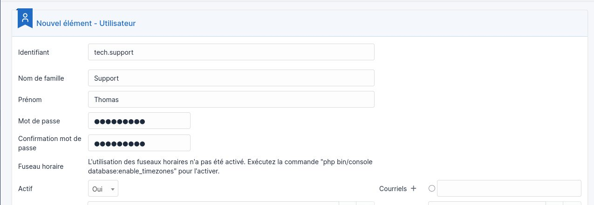
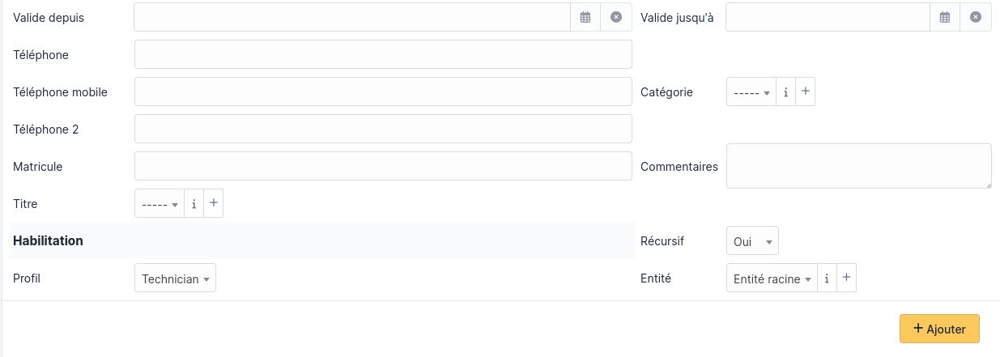
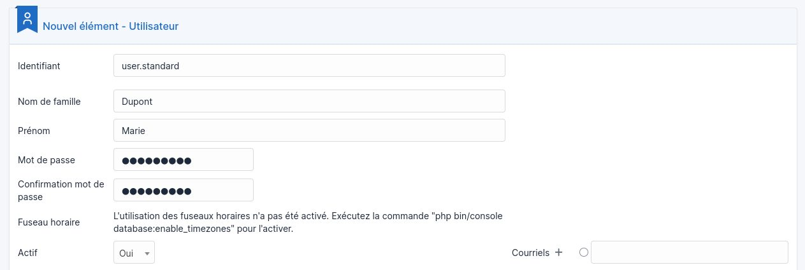
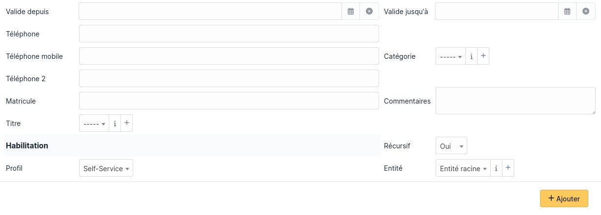
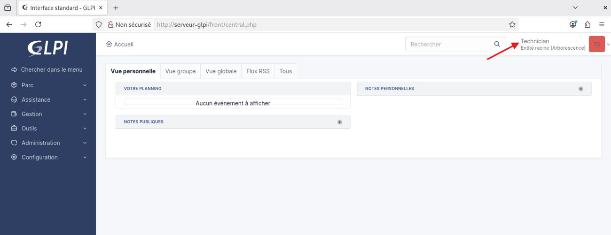
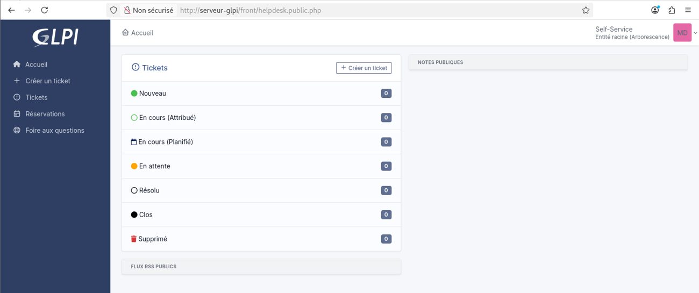

Comptes et profils
Créer un technicien et un utilisateur standard pour tester le cycle de vie d'un ticket.
Objectif
Créer les deux acteurs du helpdesk : un demandeur qui déclare les incidents (profil Self-Service) et un technicien qui les traite (profil Technician).
1. Compte du technicien
Dans Administration > Utilisateurs > Ajouter, création du compte tech.support, actif. Dans l'onglet Habilitations, ajout du profil Technician sur l'entité racine, en mode récursif.
2. Compte de l'utilisateur
Même démarche pour user.standard, avec le profil Self-Service sur l'entité racine.
3. Validation des accès
Le technicien accède au tableau de bord complet (Parc, Assistance, Administration). L'utilisateur standard n'a qu'une interface simplifiée avec « Créer un ticket » : les droits sont bien séparés.
Captures






Savoir-faire mobilisés
- Gestion des profils
- Habilitations
- Moindre privilège